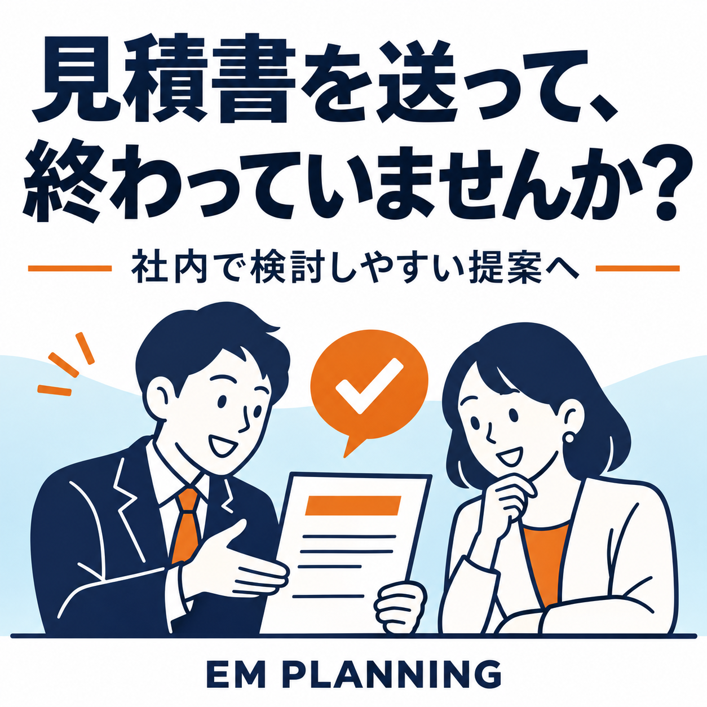

見積書を送ったあと、「社内で検討します」と返事をいただいたまま話が止まる。そんなとき、確認したいのは価格だけではありません。商談に参加していない上司や実務担当者にも、導入の目的と条件が伝わる資料になっているでしょうか。今回は、催促の仕方ではなく、お客様が社内で判断するための提案内容の整理に焦点を当てます。
1．見積書の金額だけでは、導入する理由は伝わらない
見積書には、金額や数量、対象業務、支払条件などを明記します。しかし、それだけでは「なぜ今必要なのか」「現場では何が変わるのか」が分からない場合があります。商談の場で共有した背景も、社内で資料だけが回覧されれば抜け落ちてしまいます。
そこで、正式な見積書に加えて、検討の背景と判断材料を短くまとめた要約を用意します。新しい資料を大量に増やす必要はありません。お客様の社内書式があれば、それに合わせて必要な情報を補うほうが使いやすいこともあります。
2．社内で説明するための五つの項目
- 導入の目的：どの課題を解消したいのか。現状と目指す状態を、お客様と確認した言葉で書きます。
- 依頼する範囲：提供する業務や成果物、対象外の業務を分けます。「営業支援一式」などの曖昧な表現だけで終わらせません。
- 費用と条件：月額・単発・追加費用の区別、税の扱い、期間など、比較に必要な条件をそろえます。
- 双方の役割：提供側だけでなく、お客様側にお願いする情報提供、確認、担当者の作業も明記します。
- 今回決めること：実施範囲、開始時期、追加確認事項など、どこまで判断していただきたいかを絞ります。
決裁者だけでなく、実際に使う人の負担にも目を向けます。新しい仕組みを入れても、現場に入力や確認の時間がなければ運用は続きません。費用と同じように、導入後の担当と作業を説明することが大切です。
3．「営業支援を導入する」を、具体的に説明する例
以下は説明のための架空の例です。当社の提供実績や特定のお客様への提案ではありません。
現状：見積もり提出後の対応が担当者ごとに異なり、案件の進み具合を共有しにくい。
今回の範囲：案件管理項目の整理と、週次の確認方法の設計。新規の架電業務は含まない。
受け取るもの：案件管理表のひな型、運用手順、会議で使う確認項目。
社内で必要な対応：既存案件の情報を用意し、営業責任者が運用案を確認する。
判断事項：対象チーム、実施期間、担当者の確保。費用と契約条件は添付見積書に記載する。
このように書けば、社内の読み手は「何を任せ、何が残り、自分たちは何をするか」を確認できます。資料内の説明と見積書の対象範囲が食い違わないよう、提出前に照合しましょう。
4．効果を大きく見せるより、前提を明確にする
期待する効果は、確認できた根拠とセットで説明します。例えば作業時間の削減を見込むなら、現在の件数や一件あたりの時間、誰の作業を対象にするかを確かめます。仮の数字で試算する場合は、仮定であることを明記し、効果を保証する表現にしません。
売上や受注には、商品・価格・市場・社内の対応など複数の条件が関わります。「必ず売上が増える」と言い切るより、何を実施し、どの数字や状況を確認して改善するかを示すほうが、検討する側も判断しやすくなります。
5．送る前に、担当者と使い方を確認する
要約を作ったら、「社内で説明される際に、足りない情報はありますか」と確認します。会議の時期や必要な書式、実務担当者から出ている懸念など、話せる範囲で教えていただきます。決裁者への接触を無理に求めたり、相手の社内事情を決めつけたりする必要はありません。
提出後の連絡も、「その後どうですか」だけでなく、「作業範囲について補足が必要でしょうか」など、検討に役立つ確認にします。連絡時期と方法は相手と相談し、催促が目的にならないようにしましょう。
次の見積書に、短い「判断材料」を添えてみる
提案の価値は、説明した量だけでは決まりません。商談にいなかった人が読んでも、目的・範囲・費用・役割を理解できるか。まず次の一件で、見積書に短い要約を添えてみてください。お客様の社内検討を支えることも、営業の大切な仕事です。